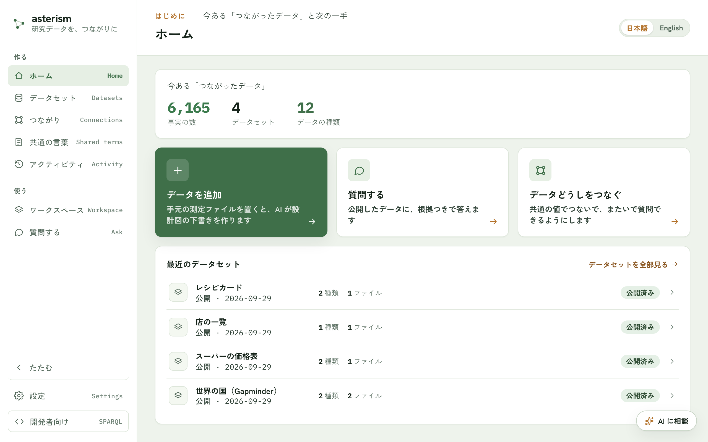
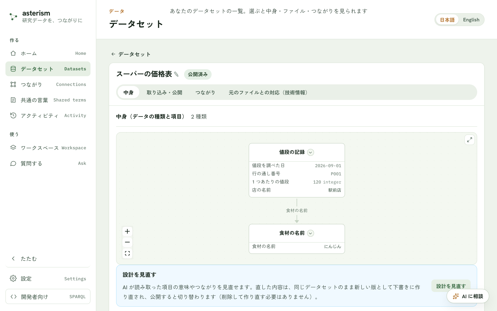
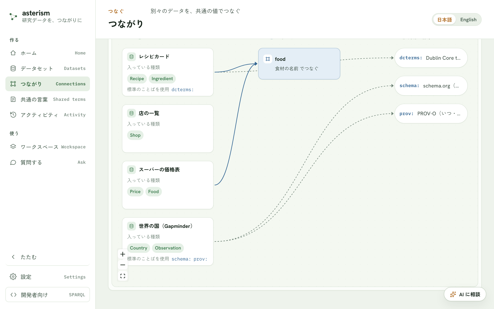

表も、装置のファイルも、文書も
Excel・CSV・装置が書き出したファイル・JSON に加えて、論文などの文書も取り込めます。文書は節・段落・文ごとに ID が付き、文の単位で検索して、出典つきで引用できます。
※ Word・PDF の取り込みは、いまのところサーバ版が対象です。
データの追加の章へ →Asterism · オープンソースの意味論エンジン
この列は何の値で、単位は何で、どの試料の測定か。データを読み解く文脈は、たいてい人の頭の中にしかありません。Asterism は、測定ファイル・表・論文を取り込み、AI の下書きをあなたが確かめることで、その「データの見方」を知識グラフとオントロジーにします。AI は、あなたの研究室の見方でデータを引き、出どころを添えて答えられるようになります。

What it is
Asterism（アステリズム）という名前は「星群」に由来します。データの一つひとつが星、知識グラフやオントロジーが星を結ぶ線、つながって現れる形が知識です。
測定値、試料、論文の一文。取り込んだデータの一つひとつが、自分の ID を持つ点になります。
「この測定は、この試料のもの」のような事実のつながりが知識グラフ。「試料」「測定」といったことばと、その関係の整理がオントロジーです。
つながると、人にも AI にも読める形になります。AI は、データの説明と構造を先に読んでから、あなたのデータを引きます。いわば「AI への取扱説明書」です。
How it works
データベースや専門の規格（RDF・SPARQL など）を知らなくても大丈夫です。手元のファイルから、AI が引ける知識までを 3 段で。
Excel・CSV、装置が書き出した .txt / .dat、JSON、論文などの文書（Word・PDF はサーバ版）を、そのまま置きます。表や装置のファイルは、AI が中身を読んで「どんな種類のデータで、各項目が何を表すか」の下書きを作ります。文書は、節・段落・文に分けて取り込みます。
列やファイル先頭の値の意味・単位、データどうしのつながりを、あなたが確かめて決めます。決めた設計図どおりに機械が変換するので、同じファイルからは毎回同じデータができます。公開するまでは下書きで、質問の答えや、ほかの AI からの問い合わせには使われません。
公開したデータに、ふつうの言葉で質問できます。データに基づく答えには出どころが付き、どのデータセットのどの取り込みから来たかをたどれます。
Screens
画面の言葉は、データの専門用語ではなく、ふだんの言葉で書いてあります。
Excel・CSV・装置が書き出したファイル・JSON に加えて、論文などの文書も取り込めます。文書は節・段落・文ごとに ID が付き、文の単位で検索して、出典つきで引用できます。
※ Word・PDF の取り込みは、いまのところサーバ版が対象です。
データの追加の章へ →
AI が読んだ意味が、実データの例と並んで出てきます。ファイルの先頭に一度だけ書かれた値も、1 件ごとの値も対象です。違っていれば書き換えるだけ。単位は、国際的な標準（QUDT）に照らして揃えられます。
はじめる（7 ステップ）→
確かめた「データの種類」「項目」「つながり」は、そのデータセットのオントロジー（ことばの整理）として保存されます。Dublin Core・PROV-O・schema.org・QUDT・EMMO など、世界の標準のことばに結びつけることもできます。
共通の言葉の章へ →
別々に作ったデータでも、同じ値（たとえば「食材の名前」）を手がかりにつながります。候補は AI を使わず、実際の値の重なりから探します。つなげば、データをまたいで質問できます。
つながりの章へ →
1 件ごとのページ（たとえば、ある国や、ある試料のページ）を開いて「人口の推移を棒グラフで」と頼むと、そのページの値からグラフを作り、何を使ったかを添えて返します。残すかどうかは、あなたが決めます。
ワークスペースの章へ →
Who it's for
研究室でも、データベース運営でも、AI と組む開発でも。
装置のファイルや測定表を、列の意味と単位がわかる形で残せます。数年後の自分にも、共同研究者にも説明がいりません。
文献から集めたデータに、引用できる ID と出どころを。公開後も、追記・差し替え・設計の見直しができます。ID のつけかたを変えても、前の ID に引っ越し先が記録されるので、すでに配った引用からたどれます。引き継げない ID があるときは、公開の前に知らせます。
先輩の頭の中にあった「列の意味」や「単位」を、研究室の資産として残せます。人ごと・装置ごとにばらばらのデータも、共通のことばでつながります。
Asterism は、MCP（AI アシスタントが外のデータや道具につながるための共通の規格）の接続先になります。Claude Code・Claude Desktop・Cursor・VS Code などの AI が、データの説明と構造を読んだうえで、あなたのデータを引けます。
Trust
AI は下書きと相談役。データを作るのは、人が確かめたルールです。
AI が作るのは下書きまでです。取り込みを実行するのは、あなたが確かめた変換ルールと、あらかじめ人が点検した部品（関数）だけ。だから同じファイルからは、毎回同じデータができます。
データと、その見方の保存先は、自分の PC か、自分たちで立てたサーバです。AI に読ませる表の内容や質問は、登録した AI のサービスに送られます。外に出したくないデータには、手元で動く AI（Ollama など）を選べます。
Apache-2.0 で公開しています。データの形式は RDF、問い合わせの言語は SPARQL、来歴の書き方は PROV-O。どれも W3C の標準なので、Asterism の外でもそのまま読めます。
Start
まずはインストール不要のデモで、「出どころつきの答え」を体験できます。
熱電材料のデータ（Starrydata の一部）で、「出どころつきの答え」がどう見えるかを確かめるデモです。サーバも AI も使わず、ブラウザの中の問い合わせ（SPARQL）だけで動きます。答えの ID（IRI）と、実行した問い合わせまで見られます。
デモを開く →研究室やチームで共有するときは、Docker で自分たちのサーバに立てられます。立て方と注意点は、GitHub の README（Quickstart と Security / deploying の節）にあります。
Asterism は開発中です。使ってみた感想や要望は、GitHub の Issue でお寄せください。
FAQ
いりません。かんたんモードでは「この列は何の値か」「どのデータとつなぐか」をふだんの言葉で選ぶだけです。しくみを知りたくなったら、マニュアルの「つながったデータの基礎」で図解しています。変換ルールや検査結果まで見たい人には詳細モードもあります。
知識グラフは「この測定は、この試料のもの」のような事実のつながり、オントロジーは「試料」「測定」といったことばと、その関係の整理です。Asterism では、かんたんモードで種類・項目・つながりを確かめると、両方ができあがります。
表の読み取り・設計の下書き・ふつうの言葉での質問には AI を使います。設定で、Anthropic（Claude）・OpenAI・OpenAI 互換のサービス（さくらの AI Engine・Groq・Ollama など）から登録してください。一方、データそのものは人が確定した設計図から機械が作るので、同じファイルからは同じデータができます。文書の取り込みと、つながりの候補さがしには AI を使いません。
デスクトップ版では、自分の PC の中に保存されます。サーバ版では、自分たちで立てたサーバの中です。公開するまでは下書きで、質問の答えや、ほかの AI からの問い合わせには使われません。なお、設計の下書きや質問のときに AI に読ませる表の内容や質問は、登録した AI のサービスに送られます。
表は Excel（.xlsx）・CSV・タブ区切り、装置が書き出したファイル（.txt / .dat）、JSON に対応しています。文書は、論文の XML（JATS）・Word・PDF です。このうち Word と PDF は、いまのところサーバ版が対象です。文字が画像になっているスキャン PDF は読み取れません。詳しくは「データの追加」をご覧ください。
はい。Asterism 自身が MCP の接続先になります。デスクトップ版では、設定の「ほかの AI から使う」タブに、Claude Code・Claude Desktop・Cursor・VS Code 向けの設定内容がそのまま出ます。
Asterism 自体は Apache-2.0 のオープンソースで、無料です。AI を使う分は、登録したプロバイダの料金がかかります。